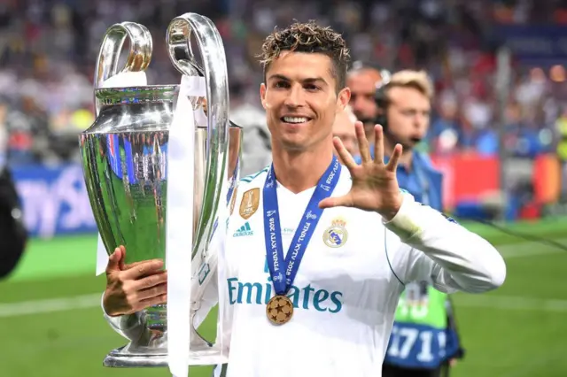
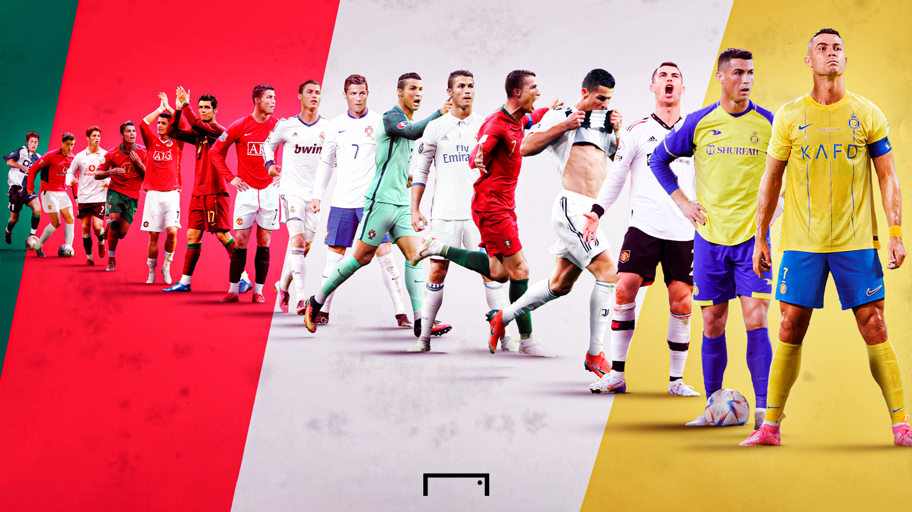
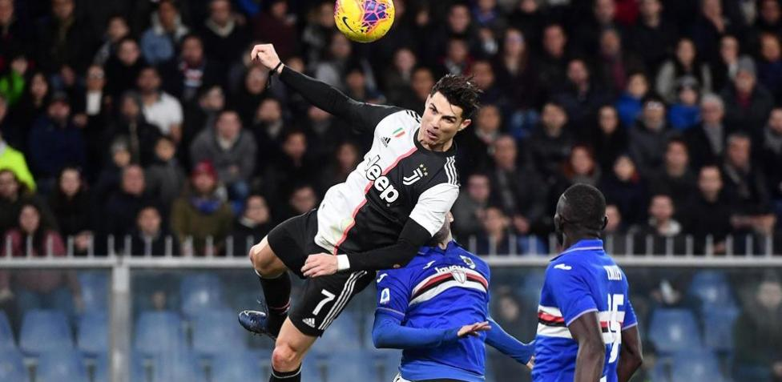

Cristiano Ronaldo dos Santos Aveiro
 Nacio en Funchal, Madeira el 5 de febrero de 1985, es un futbolista portugués. Juega de delantero y su
equipo actual es el Al-Nassr F. C. de la Liga Profesional Saudí.19 Es internacional absoluto con la
selección de Portugal, de la cual es capitán, máximo goleador histórico y jugador con más presencias con
217 partidos, logro alcanzado en las eliminatorias para la Eurocopa 2024 y reconocido por el Libro
Guinness de los récords.
Carrera en clubes
-

- Cristiano Ronaldo (CR7) ha jugado en varios clubes a lo largo de su carrera. Comenzó su carrera
profesional en el Sporting de Lisboa, pero su gran salto fue al Manchester United en 2003. Después,
en 2009, se trasladó al Real Madrid, donde vivió su etapa más exitosa y marcó muchos de los goles
que lo consolidaron como uno de los mejores jugadores de la historia. En 2018, pasó a la Juventus,
donde jugó hasta 2021. Posteriormente, regresó al Manchester United por un tiempo antes de unirse
al Al Nassr de Arabia Saudita en 2023. A lo largo de su carrera, ha dejado su huella en cada uno de
estos equipos.
Perfil de jugador
-

Cristiano Ronaldo, nacido el 5 de febrero de 1985 en Funchal, Madeira, es uno de los futbolistas
más grandes de la historia. Ha jugado en varios de los clubes más importantes del mundo,
incluyendo el Manchester United, Real Madrid, Juventus y Al Nassr, destacándose por su increíble
capacidad goleadora, velocidad, habilidades aéreas y potente disparo. A lo largo de su carrera, ha
ganado numerosos títulos, incluidos cinco Balones de Oro, y ha establecido récords como el
máximo goleador de la UEFA Champions League y de selecciones europeas. Además, ha sido una
pieza clave en la selección nacional de Portugal, con la que conquistó la Eurocopa 2016 y la Liga de
Naciones 2019. Con su ética de trabajo y dedicación, Ronaldo ha mantenido un nivel de élite
durante más de dos décadas, convirtiéndose en una leyenda tanto dentro como fuera del campo.

Cristiano Ronaldo es un jugador completo, reconocido por su increíble capacidad goleadora, su
velocidad explosiva y su dominio del juego aéreo. A lo largo de su carrera, ha evolucionado desde
un extremo habilidoso a un delantero letal, capaz de marcar en cualquier situación. Su potente
disparo, tanto de media como de larga distancia, es una de sus principales armas, y su capacidad
para regatear a los defensores sigue siendo formidable. Además, su impresionante salto y tiempo de
anticipación le permiten destacar en los balones aéreos. A pesar de los años, Ronaldo mantiene una
gran disciplina física y un trabajo incansable, lo que le ha permitido mantenerse en la élite del fútbol
mundial.